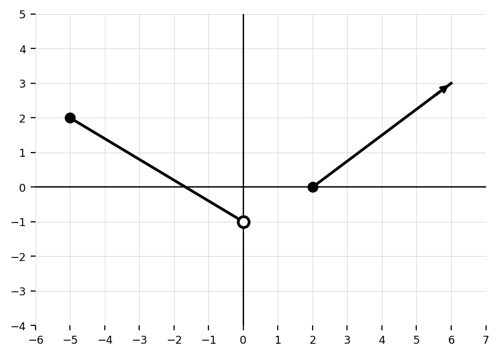

Domain & Range
Teacher Notes
Mathematical idea: A function tells a story only after we know where the story is allowed to begin and what values it can produce.
In this section, you will describe domains and ranges, explain restrictions, and connect notation to the structure and meaning of a function.
Learning Target
Students will determine and justify the domain and range of functions using graphical and algebraic reasoning.
I can statements
- I can determine the domain of a function from its graph or equation.
- I can determine the range of a function from its graph or equation.
- I can explain restrictions in domain and range based on function structure.
What’s To Come
Later in this section, you will return to the task below. For now, do not solve it. Instead, annotate it individually. Circle anything familiar, underline symbols or directions that seem important, and write notes about what information you think will be needed.
As you annotate, ask yourself: What inputs are possible? What outputs are possible? Are any values excluded by the graph, equation, or context? How will I justify the restrictions?
Future Task
A company models the height, in feet, of a small toy rocket using a function $H(t)$, where $t$ is time in seconds after launch. The rocket starts on the ground, rises to a maximum height of $64$ feet, and returns to the ground after $4$ seconds.
- State a reasonable domain for $H(t)$ in interval notation.
- State a reasonable range for $H(t)$ in interval notation.
- Explain why values outside the domain do not make sense in context.
- Compare the contextual domain and range with the domain and range of the mathematical quadratic model if it were extended forever.
Intro
Directions
Read the introduction aloud with a partner or in a small group. As you read, annotate the text by marking important ideas, circling key vocabulary, and writing short notes about connections, questions, or predictions in the margins.
Every function has inputs and outputs. The domain is the set of input values that are allowed for the function. The range is the set of output values the function can produce. These ideas help us describe not only the shape of a graph, but also the meaning and limits of a relationship.
Domain and range can be shown in several ways. A graph shows inputs from left to right and outputs from bottom to top. A table lists specific input-output pairs. An equation may reveal values that are not allowed, such as values that make a denominator equal to zero or values that make an even root have a negative radicand.
Context can also create restrictions. If a function models time after a rocket is launched, negative time may not make sense. If a function models height, outputs below the ground may not be reasonable. Sometimes the algebraic model continues forever, but the real-world situation does not.
In this section, you will practice reading domains and ranges carefully, choosing notation accurately, and explaining why restrictions occur. The goal is not just to name an interval, but to justify what the interval means.
Stop and Discuss
- What is the difference between domain and range?
- How can a graph help you determine domain?
- How can an equation create restrictions?
- Why might a real-world context restrict a function more than its equation does?
Reading Inputs and Outputs from a Graph
On a graph, the domain is found by looking left to right across the $x$-values. The range is found by looking bottom to top across the $y$-values.
Graph Reading Reminder
- Domain asks: What $x$-values are used?
- Range asks: What $y$-values are produced?
- Closed endpoints are included. Open endpoints are excluded.
- Arrows mean the graph continues.
Example 1
Use the graph to determine the domain and range of the function. Write each answer in interval notation.

You Try It 1
The graph below represents possible input and output values for a function.
- Determine the domain.
- Determine the range.
- Explain what the open endpoint changes.

Stop and Discuss
- Why is domain read horizontally?
- Why is range read vertically?
- How do open and closed points affect interval notation?
Finding Domain from an Equation
Some equations allow every real input. Others have restrictions built into their structure.
Common Algebraic Restrictions
- Denominators cannot equal $0$.
- Even roots cannot have a negative radicand when working with real numbers.
- Context may create additional restrictions even when the equation itself does not.
Example 2
Determine the domain of $g(x)=\sqrt{x-5}$. Write your answer in interval notation and explain the restriction.
You Try It 2
Determine the domain of $h(x)=\sqrt{x+2}$. Write your answer in interval notation and explain the restriction.
Example 3
Determine the domain of $p(x)=\dfrac{1}{x-3}$. Write your answer in interval notation and explain the restriction.
You Try It 3
Determine the domain of $r(x)=\dfrac{2x+1}{x+4}$. Write your answer in interval notation and explain the restriction.
Stop and Discuss
- Why does a denominator of $0$ create a domain restriction?
- Why does a square root create a different type of restriction?
- How is excluding one number different from starting at one number and continuing right?
Domain and Range from Tables
When a relation is shown in a table, the domain is the set of listed input values and the range is the set of listed output values. Repeated values should only be written once in the set.
Example 4
The table gives values of a function. Determine the domain and range of the relation.
| $x$ | -3 | -1 | 0 | 4 | 7 |
|---|---|---|---|---|---|
| $f(x)$ | 5 | 2 | 2 | -6 | 1 |
You Try It 4
The table gives values of a function. Determine the domain and range of the relation.
| $x$ | -2 | -2 | 1 | 3 | 5 |
|---|---|---|---|---|---|
| $g(x)$ | 4 | 6 | 0 | 0 | -1 |
Stop and Discuss
- Why should repeated values only be written once in a domain or range set?
- Can a table prove the complete domain of every function? Why or why not?
- How is a listed set different from interval notation?
Interpreting Domain and Range in Context
In applications, domain and range are not just mathematical sets. They describe what values are reasonable for the situation.
Context Question
Ask: What values make sense for the input? What values make sense for the output?
Example 5
A function $C(t)$ represents the cost of renting a kayak for $t$ hours. The rental shop allows rentals from $0$ to $8$ hours.
- State a reasonable domain in interval notation.
- Explain why each endpoint is included or excluded.
- Describe what the domain means in context.
You Try It 5
A function $H(t)$ represents the height of a ball thrown from the ground. The maximum height is $64$ feet and the ball returns to the ground.
- State a reasonable range.
- Explain why the range makes sense in context.
Stop and Discuss
- Why might a mathematical function allow inputs that do not make sense in a context?
- What does it mean for a domain to be reasonable?
- How can context change the range?
Reasoning and Error Analysis
Error analysis helps reveal whether domain and range are being interpreted structurally. Common errors include mixing up input and output values, ignoring open endpoints, using brackets with excluded values, or forgetting equation restrictions.
Stop and Discuss
A student says the domain of $f(x)=\sqrt{x-1}$ is $(-\infty,1]$ because the graph should stop at $1$. Identify the error and explain the correct reasoning.
Summary
Domain and range describe the inputs and outputs of a function.
- The domain is the set of allowed input values.
- The range is the set of possible output values.
- Graphs show domain horizontally and range vertically.
- Tables show listed input-output values.
- Equations may restrict values through denominators, square roots, or other structure.
- Context can restrict what values are reasonable even when the equation allows more.
Common Mistakes
- Mixing up domain and range: Domain uses $x$-values. Range uses $y$-values.
- Ignoring endpoint type: Open endpoints are excluded; closed endpoints are included.
- Using repeated values in a set: Each value should only be listed once.
- Forgetting denominator restrictions: Denominators cannot equal $0$.
- Forgetting square root restrictions: Even-root radicands must be greater than or equal to $0$ when working with real numbers.
- Ignoring context: A real-world situation may have a smaller domain or range than the equation alone.